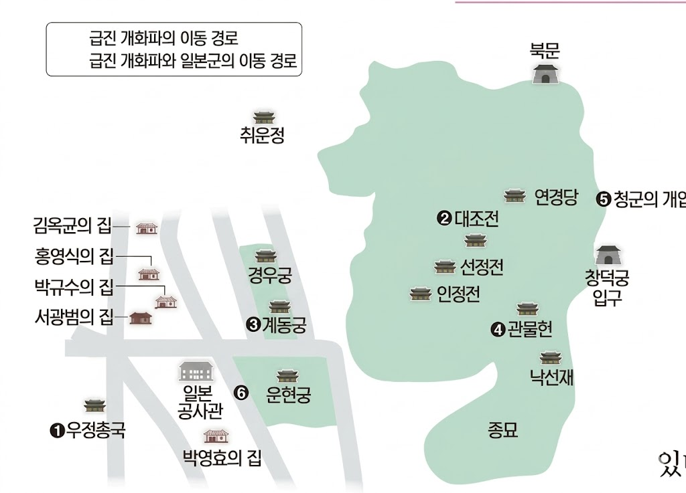
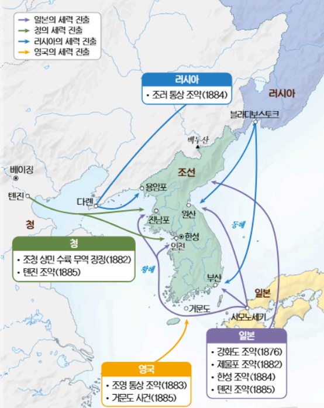
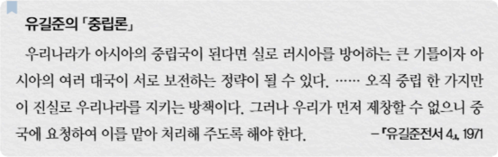
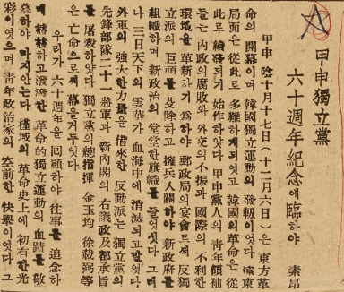
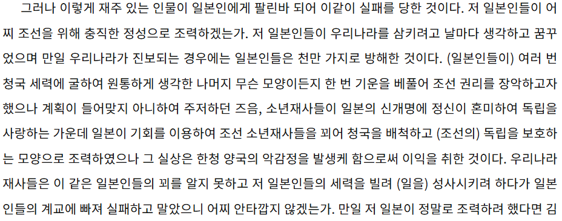

Ⅲ. 근대 국가 수립의 노력 > 2. 근대 국가 수립을 위한 노력
04. 갑신정변이 일어나고
열강의 대립이 커지다
교생 김찬결
오늘의 수업 목차
생각 열기
개화파의 분화
갑신정변의 전개
갑신정변의 개혁 방향과 의의, 한계
열강의 대립 격화와 중립론, 조선의 대응
학습 정리
도입: 생각 열기
📝 전시 학습 확인
1.
19세기 후반 보수적 양반 유생들은 서구 열강의 침략적 접근과 조선 정부의 개항, 개화 정책 추진에 반발하여 위정척사 운동을 일으켰다.
2.
1882년, 구식 군대 군인과 도시 하층민이 임오군란을 일으켜 일본 공사관을 공격했다.
도입: 생각 열기
오늘의 학습 목표
1. 갑신정변의 전개 과정과 역사적 의의를 설명할 수 있다.
2. 갑신정변 이후 열강의 대립과 조선의 대응 방안을 파악할 수 있다.
1. 개화파의 형성과 분화
북학 사상
박지원, 홍대용, 박제가, 이덕무
박지원, 홍대용, 박제가, 이덕무
통상 수교론
박규수, 오경석, 유홍기
박규수, 오경석, 유홍기
1876년 개항
개화파
급진 개화파
김옥균, 박영효,
홍영식, 서광범
홍영식, 서광범
온건 개화파
김윤식, 김홍집,
어윤중
어윤중
| 구분 | 온건 개화파 | 급진 개화파 |
|---|---|---|
| 핵심 인물 | 김홍집, 김윤식, 어윤중 | 김옥균, 박영효, 홍영식 등 |
| 개혁 모델 | 청 양무운동 |
일본 메이지 유신 |
| 외교 및 정치 | 동도서기론 청과 우호 관계 유지 |
문명개화론 입헌 군주제 실시 목표 |
📌 갑신정변의 배경
- 급진 개화파의 입지 축소: 일본에서 차관 도입에 실패하면서 정치적 입지가 줄어듦
- 청군의 철수: 청·프 전쟁 발발로 인해 조선에 주둔하던 청군 병력의 절반이 철수함
- 일본의 지원 약속: 급진 개화파 세력에게 일본 공사가 군사적, 재정적 지원을 약속함
3. 갑신정변의 전개 과정과 결과

갑신정변의 결과:
한성 조약(일-조),
톈진 조약(청-일)
3. 근대 국가의 설계도: 개혁 정강 14개조
각 정강을 터치(또는 마우스)로 드래그하여 알맞은 개혁 분야로 분류해 보세요.
1. 잡혀간 흥선 대원군을 곧 돌아오게 하고 청에 조공하는 허례를 폐지한다.
2. 문벌을 폐지하여 인민 평등권을 제정하고 능력에 따라 관리를 임명한다.
3. 지조법을 개혁하여 부정을 막고 백성을 보호하며 재정을 넉넉하게 한다.
9. 혜상공국(보부상 관할 기관)을 혁파한다.
12. 재정은 모두 호조에서 관할하게 하고 그 밖의 재무 관청은 폐지한다.
13. 대신과 참찬은 궁궐 내의 의정소에서 회의하고 국왕에게 아뢰어 정령을 집행한다.
14. 의정부와 6조 외의 불필요한 기관을 없애고, 대신과 참찬이 논의하여 보고한다.
🏛️ 정치
💰 경제
🤝 사회
💡 의의
자주적 근대 개혁을 위한 최초의 정치개혁운동
⚠️ 한계
소수의 지식인이 중심으로 된 위로부터의 개혁
민중의 지지를 얻지 못함, 일본의 군사적 지원에 의존
4. 열강의 대립 격화

조선을 둘러싼 열강의 대립 격화
4-1. 열강의 대립 격화: 거문도 사건 (1885)

영국 함대가 러시아의 남하를 구실로 조선의 거문도를 불법 점령
5. 조선의 대응과 중립론

• 중립론의 대두: 독일 부영사 부들러, 유길준이 중립론 주장
• 조선 정부의 자강 정책: 내무부 설치, 미국/일본에 공사관 설립
• 조선 정부의 자강 정책: 내무부 설치, 미국/일본에 공사관 설립
내가 평가하는 갑신정변
[사료 1] 조소앙, <갑신독립당 60주년에 임하야>

(1884년) 갑신년 10월 17일(양력 12월 6일)은 동방 혁명의 개막이자 한국 독립운동의 출발이었다. 이로부터 극동의 국면은 다사다난해졌고, 한국의 혁명은 이로부터 잇달아 일어나게 되었다.
갑신정변을 일으킨 당(개화당)의 청년 지도자들은 내정의 부패와 외교의 부진, 그리고 국제적으로 불리한 환경을 혁신하기 위하여, 우정국 연회를 이용하여 반독립파(수구파)의 거두들을 제거하였다. 그리고 군사를 옹위하여 대궐로 들어가 새 정부를 조직하고 새 정치의 당당한 깃발을 높이 들었었다. 그러나 '3일 천하'의 피어오르던 꽃(화려함)은 결국 피바다 속에서 소멸되고 말았다. 외국 군대(청나라군)의 강대한 힘을 빌려온 반동파들은 독립당의 선봉부대였던 21명의 장군과 신내각의 우의정(홍영식), 도승지 등을 잔인하게 도살하였다. 독립당의 총지휘자였던 김옥균, 서재필 등은 망명길에 오르는 것으로 막을 내렸다. 우리가 (사건이 일어난 지) 60주년을 회고하며 지난 일을 추념해 보니, 생생하고 활기 넘쳤던 그 혁명적 독립운동의 핏자국에 경의와 사모하는 마음(경모)을 금할 길이 없다. 이는 우리 국토의 혁명 역사상 처음으로 마주한 빛나는 광채였으며, 청년 정치가들이 이뤄낸 전무후무한 쾌거였다.
갑신정변을 일으킨 당(개화당)의 청년 지도자들은 내정의 부패와 외교의 부진, 그리고 국제적으로 불리한 환경을 혁신하기 위하여, 우정국 연회를 이용하여 반독립파(수구파)의 거두들을 제거하였다. 그리고 군사를 옹위하여 대궐로 들어가 새 정부를 조직하고 새 정치의 당당한 깃발을 높이 들었었다. 그러나 '3일 천하'의 피어오르던 꽃(화려함)은 결국 피바다 속에서 소멸되고 말았다. 외국 군대(청나라군)의 강대한 힘을 빌려온 반동파들은 독립당의 선봉부대였던 21명의 장군과 신내각의 우의정(홍영식), 도승지 등을 잔인하게 도살하였다. 독립당의 총지휘자였던 김옥균, 서재필 등은 망명길에 오르는 것으로 막을 내렸다. 우리가 (사건이 일어난 지) 60주년을 회고하며 지난 일을 추념해 보니, 생생하고 활기 넘쳤던 그 혁명적 독립운동의 핏자국에 경의와 사모하는 마음(경모)을 금할 길이 없다. 이는 우리 국토의 혁명 역사상 처음으로 마주한 빛나는 광채였으며, 청년 정치가들이 이뤄낸 전무후무한 쾌거였다.
[사료 2] 박은식, <한국통사>

📝 위 두 사료를 참고해 갑신정변에 대한 나의 평가를 근거와 함께 써보자.
오늘 배운 내용 총정리
좌측의 키워드 버튼을 클릭하여
핵심 내용을 확인하세요!
핵심 내용을 확인하세요!
개화파의 분화
• 온건 개화파: 청의 양무운동을 모델로 동도서기론 주장. 청과의 우호 관계 유지. (김윤식, 김홍집)
• 급진 개화파: 일본의 메이지 유신 모델로 문명개화론 주장. 입헌군주제 목표.(김옥균, 박영효)
갑신정변의 전개
• 우정총국 개국축하연을 기회로 정변 ➡ 개화당 정부 수립 ➡ 청군의 개입 ➡ 일본군 후퇴 ➡ 주동자들의 일본 망명
• 결과: 한성 조약, 톈진 조약 체결
갑신정변의 의의와 한계
• 의의: 자주적 근대 개혁을 위한 최초의 정치개혁운동
• 한계: 소수의 지식인이 중심으로 된 위로부터의 개혁, 민중의 지지를 얻지 못함, 일본의 군사적 지원에 의존
열강의 대립 격화와 조선의 대응
• 거문도 사건(1885): 러시아 남하를 구실로 영국 함대가 거문도 불법 점령
• 조선의 대응: 내무부 설치, 공사관 설립
• 중립론: 독일의 부들러와 유길준이 조선을 중립국으로 만들자는 중립론 주장 (실현 안됨)
형성 평가
1. 다음 설명이 맞으면 O표, 틀리면 X표를 하시오.
⑴ 온건 개화파는 동도서기론을 주장하였다.
정답 확인
⑵ 온건 개화파는 입헌 군주제 실시를 목표로 하였다.
정답 확인
⑶ 급진 개화파는 일본의 메이지 유신을 개혁 모델로 삼았다.
정답 확인
⑷ 급진 개화파는 청과 우호 관계를 유지해야 한다고 주장하였다.
정답 확인
2. 밑줄 친 ‘이 조약’을 쓰시오.
이 조약은 갑신정변의 결과 청과 일본 간에 체결된 조약으로, 조선에서 양국의 군대를 철수하되 앞으로 조선에 군대를 보낼 때는 상대국에 미리 알릴 것을 규정하였다.
정답: 톈진 조약
3. 갑신정변 이후 대내외 상황으로 적절하지 않은 것은?
① 청의 내정 간섭이 심해졌다.
② 고종이 내무부를 설치하였다.
③ 조러 비밀 협약이 체결되었다.
④ 영국이 거문도를 불법 점령하였다.
⑤ 조청 상민 수륙 무역 장정이 체결되었다.
정답 ⑤: 조청 상민 수륙 무역 장정은 임오군란(1882) 직후에 체결되었습니다.
4. 다음과 같이 주장한 사람을 쓰시오.
우리나라가 아시아의 중립국이 된다면 실로 러시아를 방어하는 큰 기틀이자 아시아의 여러 대국이 서로 보전하는 정략이 될 수 있다. …… 오직 중립 한 가지만이 진실로 우리나라를 지키는 방책이다. 그러나 우리가 먼저 제창할 수 없으니 중국에 요청하여 이를 맡아 처리해 주도록 해야 일이다.
정답: 유길준
감사합니다!
역사 수업에 열심히 참여해 주셔서 감사합니다.
교생 김찬결